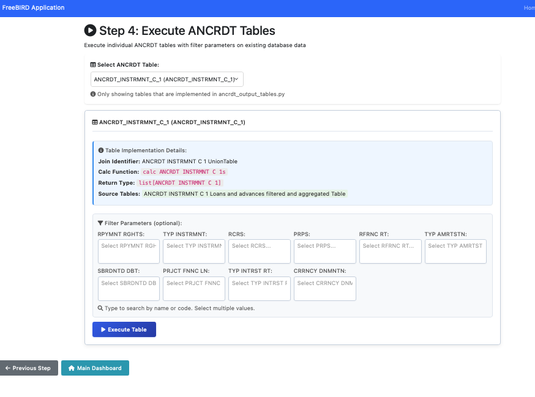

Execute Dataset Tables - User Guide
Overview
The Execute Dataset Tables feature allows you to run Dataset table transformations and view results. This is Step 4 in the Dataset Transformation Workflow, representing the final operational step where you execute the code generated in previous steps to process your regulatory data.
To access this feature, navigate to Workflows > Dataset Workflow > Step 4: Execute Tables in your FreeBIRD Application.

Prerequisites
Before you can execute Dataset tables, you must complete the first three steps of the workflow in sequence. Step 0 fetches the metadata from ECB, providing the regulatory specifications your transformations will use. Step 1 imports this metadata into your database, creating the necessary data structures. Step 2 generates the joins metadata that defines how your tables relate to each other. Finally, Step 3 generates the Python execution code and deploys it to the production environment. Each of these steps builds upon the previous one, and all must be completed successfully for the execution functionality to work properly.
How to Execute Dataset Tables
Step 1: Load Fixtures into the Database
Before executing tables, you need to load test data (fixtures) into your database. Fixtures are sample data files that provide test data for your Dataset tables, allowing you to verify that your transformations work correctly before processing production data.
To load fixtures, first ensure your fixture files are prepared in the correct format according to your Dataset specifications. Then use the database loading tool or command provided by your system to import these fixtures into the database. After the import completes, verify that the data has been loaded successfully by checking that all required source tables contain data. This step is typically done once at the beginning of your testing cycle, unless you need to refresh or update your test data with new scenarios or corrected values.
Step 2: Choose Your Filters
Once your fixtures are loaded, you can select your table and optionally apply dimension filters to process specific data subsets rather than the entire dataset.
2.1 Select Dataset Table
To begin, click the "Select ANCRDT Table" dropdown selector at the top of the page. This dropdown displays all Dataset tables that have been implemented and have deployed code available. Select the Dataset table you want to execute from this list. After making your selection, the page will display important implementation details about the table.
The Table Implementation Details section shows several key pieces of information. The join identifier is the unique identifier for this table's join logic. The calc function is the specific Python function that will be executed when you run this table. The return type indicates what kind of data structure the function will produce, and the source tables field describes which source data tables will be used in the transformation. This information helps you understand exactly what will be executed and which data sources are involved in the process.
2.2 Apply Dimension Filters (Optional)
Below the table selection, you'll find the Filter Parameters section, which displays multiple filter fields arranged in a grid layout. These filters allow you to narrow down the data that will be processed, which is particularly useful for testing, improving performance, or generating targeted reports.
The available dimensions vary depending on which table you've selected. Common dimensions include RPYMNT RGHTS (Repayment Rights), TYP INSTRMNT (Type of Instrument), RCRS (Recourse), PRPS (Purpose), RFRNC RT (Reference Rate), TYP AMRTSTN (Type of Amortization), SBRDNTD DBT (Subordinated Debt), PRJCT FNNC LN (Project Finance Loan), TYP INTRST RT (Type of Interest Rate), and CRRNCY DNMNTN (Currency Denomination).
To add filters, click on the dropdown field for your desired dimension. You can type to search for specific values by name or code, making it easy to find the exact values you need. Select one or multiple values from the list that appears, and repeat this process for as many dimensions as needed to define your data subset. If you prefer to process all available data, simply leave all filter dropdowns empty.
Understanding filter logic is important for getting the results you expect. When you select multiple values for the same dimension, they create an OR condition, meaning the system will include records matching any of the selected values. When you set filters on multiple different dimensions, these create an AND condition, meaning records must match all the criteria you've specified. If you leave all filters empty, the system will process all data in the table.
Filters serve several important purposes in your workflow. They allow you to test transformations on small data subsets first, which helps you identify any issues before processing large volumes of data. They reduce processing time significantly by limiting the amount of data the system needs to handle. They enable you to generate targeted reports for specific data segments, and they help you isolate issues for debugging by allowing you to focus on specific data patterns that may be causing problems.
Step 3: Click Execute Table
Once you've configured your table selection and any desired filters, you're ready to run the execution.
3.1 Review Your Selections
Before clicking the execute button, take a moment to verify your configuration. Check that the correct table is selected in the dropdown and that the table implementation details are displayed as expected. Confirm that your filters are set as desired, or that they're empty if you intend to process all data. Finally, make sure that fixtures have been loaded into the database, as the execution will fail without source data.
3.2 Execute
To start the execution, click the "Execute Table" button (the blue button on the page). The system will begin processing immediately, and you'll see a progress indicator showing that execution is underway. The time required for execution varies based on your data volume and complexity, typically ranging from 10 seconds for small filtered datasets to several minutes for larger or complete table executions.
3.3 View Results
After execution completes successfully, the results page displays comprehensive information about the processing that occurred.
The Execution Statistics section shows the total execution time, giving you insight into performance. It displays the number of rows that were processed and generated, allowing you to verify that the expected amount of data was handled. The page also shows which filters were applied during execution and provides the name of the output table where results were stored.
The Data Preview section shows the first 100 rows of your results, displaying all columns from the output table in a scrollable and sortable format. This preview lets you quickly verify that the transformation produced the expected output structure and values.
Several actions are available for working with your results. You can download the data as CSV format, which exports the results as comma-separated values suitable for use in spreadsheet applications or data analysis tools. Alternatively, you can download as an Excel workbook in .xlsx format that opens directly in Microsoft Excel. The View Full Data option lets you see all results with pagination if you need to examine more than the preview rows. For advanced users, the View SQL option shows the actual SQL query that was used to generate the results.
Navigation
At the bottom of the execution page, you'll find two navigation buttons that help you move through the workflow. The Previous Step button, marked with a left arrow, returns you to Step 3 where you can review or modify the generated execution code. The Main Dashboard button, marked with a home icon, takes you back to the workflow dashboard home page where you can see an overview of all workflow steps and their status.
Tips for Success
When working with Dataset table execution, following certain practices will help ensure successful results. Start with filters to test your transformations on small data subsets before processing the full dataset. This approach lets you identify and fix any issues quickly without waiting for long execution times. Always verify that fixtures are loaded before executing, as attempting to run transformations without source data will result in errors. Review the data preview carefully before downloading the full results to ensure the transformation produced the expected output. Use filters for initial testing and validation, then remove them for full execution once you're confident the transformation works correctly. Finally, download important results for record-keeping and audit purposes, as these files provide documentation of your regulatory reporting process.
Troubleshooting
If you find that you cannot select a table from the dropdown, verify that Step 3 code generation and deployment completed successfully for that table.
When execution fails with an error message, ensure that fixtures are loaded and that code is deployed properly. Check that your database connection is active and that you have the necessary permissions.
If execution completes but returns no results, check that fixture data exists in the source tables and verify that your filters aren't too restrictive. Review the join logic in your Step 3 code to ensure it's producing the expected output.
When execution takes too long, apply more restrictive filters to reduce the data volume being processed. This will help you identify whether the issue is related to data volume or transformation logic.
If downloads fail, check your browser permissions and verify that execution completed successfully before attempting to download results.
Next Steps
After executing Dataset tables, explore these related guides for additional context. Return to the Workflow Dashboard Guide to understand the complete workflow context and explore other available regulatory reporting workflows. Review the Dataset Transformation Guide for comprehensive details about Steps 0-3 that prepare the code and metadata used in table execution.
Quick Reference
To execute Dataset tables, follow these three essential steps. First, load fixtures by importing test data into your database. Second, choose your filters by selecting the desired table and optionally setting dimension filters to narrow your data subset. Third, execute the table by clicking the execute button and viewing the results that are generated.
Successfully executing Dataset tables completes the entire Dataset Transformation Workflow, providing you with the transformed regulatory data you need for ECB submissions.